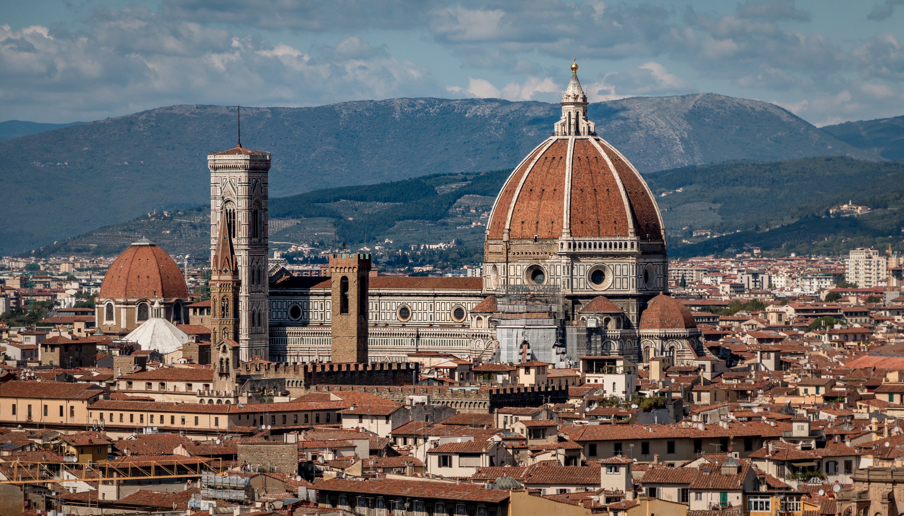
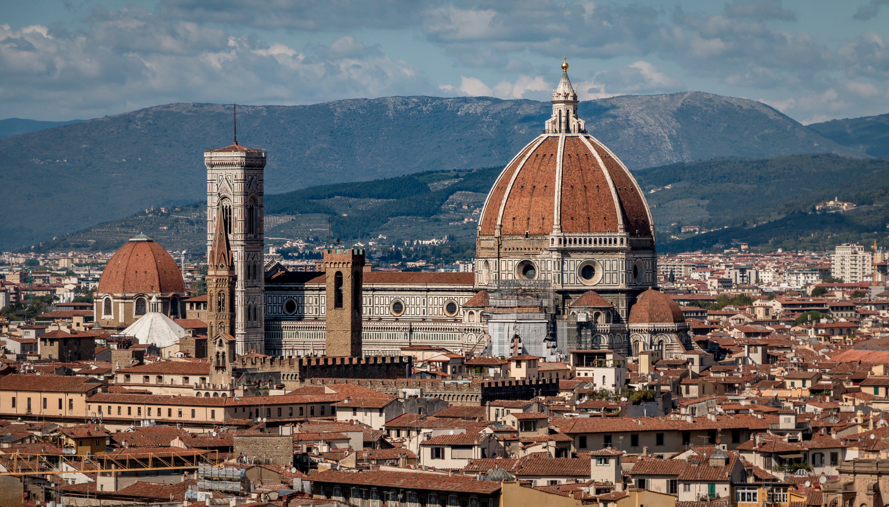

' We are all pilgrims who seek Italy.' J.W.Von Goethe
Central Italy
Central Italy breathes history and art. Rome boasts the remaining
wonders of the Roman Empire and some of the world's best known
landmarks, combined with a vibrant, big-city feel.Florence,
cradle of the Renaissance, is Tuscany's top attraction,
whereas the magnificent countryside and nearby cities like
Siena, Pisa and Lucca have much
to offer to those looking for the country's rich history and heritage.
Umbria is dotted with many pictoresque cities such as
Perugia, Orvieto, Gubbio and
Assisi.
Discover more
 
